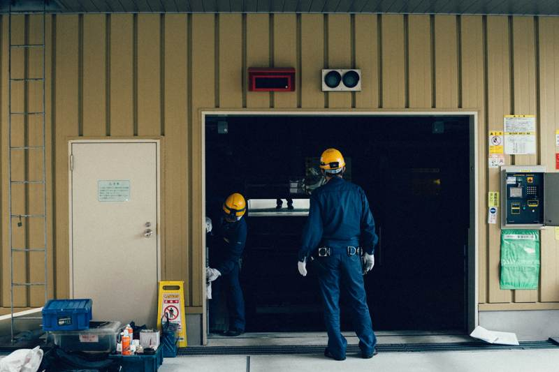
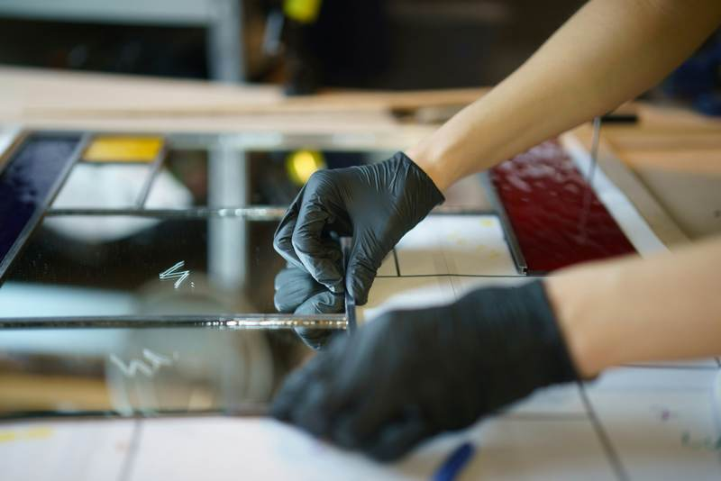

Introduction to Same Day Computer Repair
In the fast-paced world of technology, a malfunctioning computer can bring work to a screeching halt. This is especially true for businesses that rely heavily on their IT infrastructure. In Edmonton, a local computer repair service has managed to turn this challenge into an opportunity, providing efficient and reliable same-day repair services that have gained them a loyal customer base.

Understanding the Need for Speed
When computers fail, the impact on productivity can be severe. Recognizing the urgency, the Edmonton-based company committed to offering same-day services. Their strategy was simple yet effective: prioritize customer needs and ensure that repairs are done swiftly without compromising on quality.
Their approach involved setting up a streamlined process where technicians were always ready to respond. By maintaining a well-stocked inventory of parts and having skilled professionals on standby, they minimized downtime for their clients.
Case Highlights
Several key strategies contributed to the success of this repair service:
- Rapid Response: Technicians are dispatched immediately upon receiving a service request.
- Expert Technicians: A team of highly skilled professionals ensures efficient troubleshooting and repair.
- Comprehensive Diagnostics: Advanced tools are used to quickly identify issues.

Customer-Centric Approach
One of the standout features of this repair service is their commitment to customer satisfaction. They offer flexible scheduling, allowing customers to choose times that are convenient for them. Additionally, transparent pricing ensures there are no surprises when it comes to billing.
Feedback from clients has been overwhelmingly positive. Many appreciate the quick turnaround and the professionalism of the technicians. This focus on customer service has not only helped retain existing clients but also attracted new ones through word-of-mouth recommendations.
Technology and Innovation
Incorporating the latest technology has played a crucial role in their success. The use of cutting-edge diagnostic tools and software allows technicians to perform repairs with precision and efficiency. Additionally, their online platform enables customers to book appointments easily and track the status of their repairs in real-time.

Conclusion: A Model for Success
The success of this same-day computer repair service in Edmonton serves as a model for other businesses in the industry. By focusing on speed, quality, and customer satisfaction, they have effectively addressed a critical need in the market. As technology continues to evolve, their ability to adapt and innovate will likely keep them at the forefront of computer repair services.
For businesses and individuals alike, knowing that reliable and efficient repair services are just a call away provides peace of mind, ensuring that technology remains a tool for productivity rather than an obstacle.